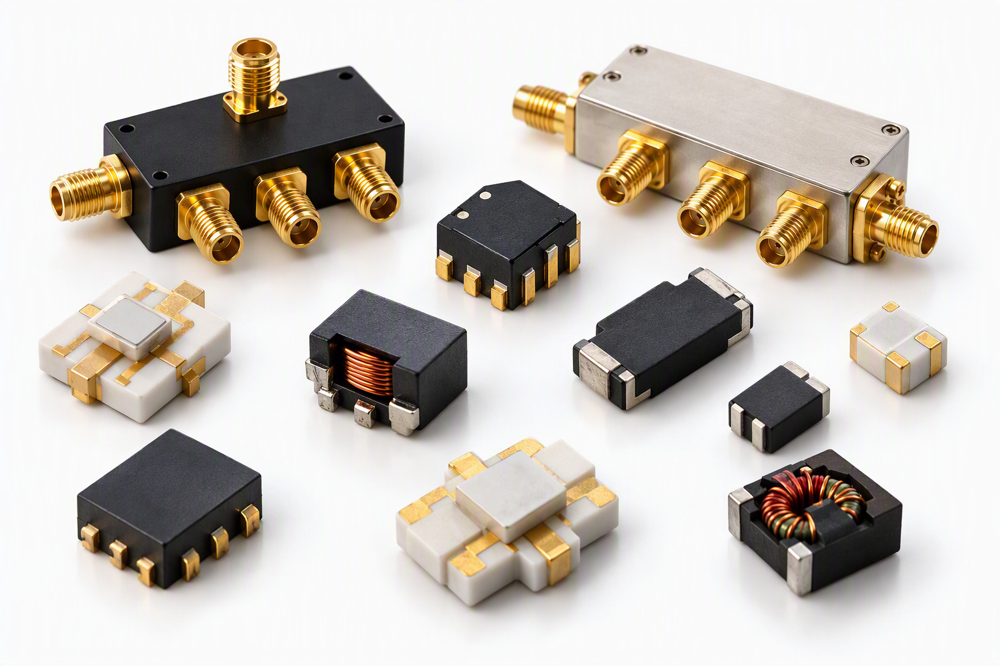

입출력 매칭과 Amplitude/Phase Balance를 위한 Divider.
광대역 RF Flux Coupled Transformer 기반 Balun.
낮은 Insertion Loss와 높은 Isolation을 특징으로 하는 Coupler.
입출력 매칭과 Amplitude/Phase Balance를 위한 Splitter.
Part Number와 수량을 보내주시면 확인 후 회신드리겠습니다.